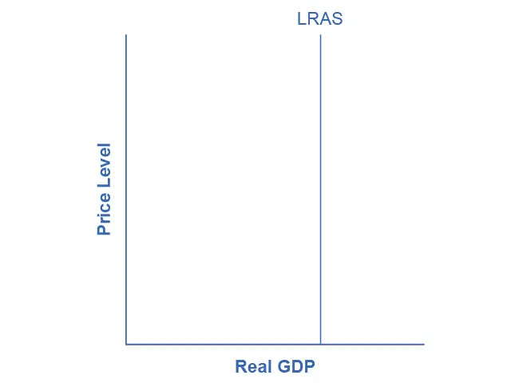
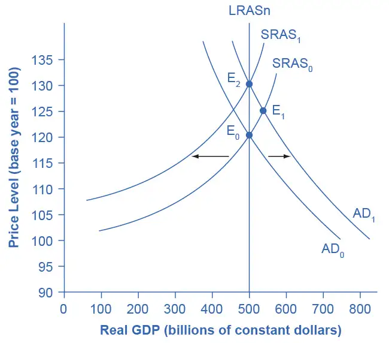
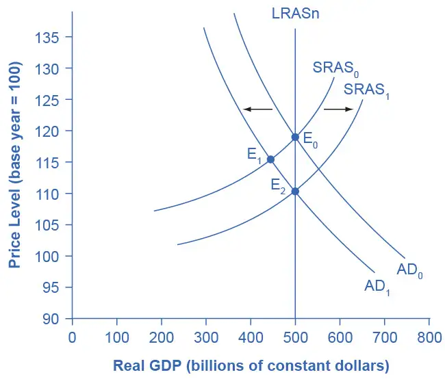
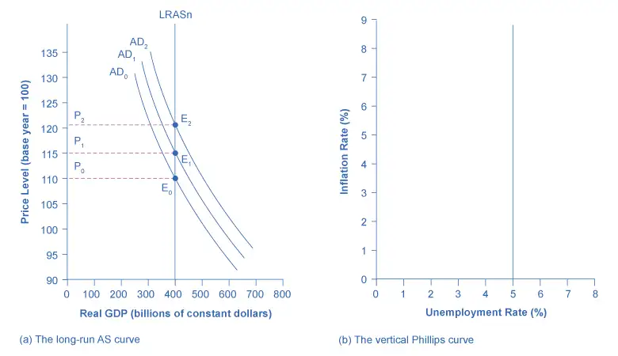
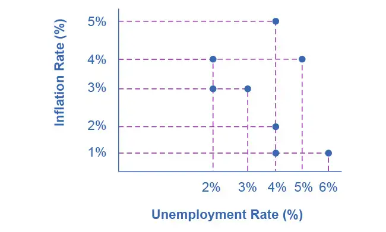
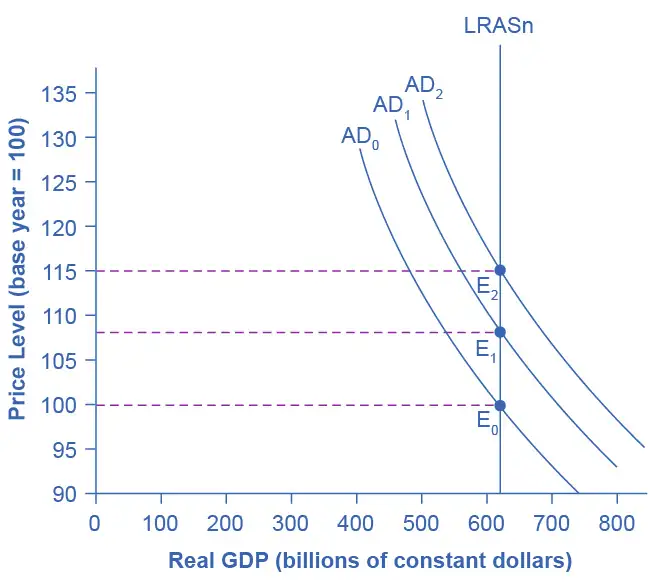

Chapter 26: The Neoclassical Perspective¶
Introduction¶
Bring It Home: Navigating Uncharted Waters
The Great Recession ended in June 2009 after 18 months, according to the National Bureau of Economic Research (NBER). The NBER examines a variety of measures of economic activity to gauge the economy's overall health. These measures include real income, wholesale and retail sales, employment, and industrial production. In the years since the official end of this historic economic downturn, it has become clear that the Great Recession was two-pronged, hitting the U.S. economy with the collapse of the housing market and the failure of the financial system's credit institutions, further contaminating global economies. While the stock market rapidly lost trillions of dollars of value, consumer spending dried up, and companies began cutting jobs, economic policymakers were struggling with how to best combat and prevent a national, and even global economic collapse. In the end, policymakers used a number of controversial monetary and fiscal policies to support the housing market and domestic industries as well as to stabilize the financial sector. Some of these initiatives included:
- Federal Reserve Bank purchase of both traditional and nontraditional assets off banks' balance sheets. By doing this, the Fed injected money into the banking system and increased the amounts of funds available to lend to the business sector and consumers. This also dropped short-term interest rates to as low as zero percent, which had the effect of devaluing U.S. dollars in the global market and boosting exports.
- The Congress and the President also passed several pieces of legislation that would stabilize the financial market. The Troubled Asset Relief Program (TARP), passed in late 2008, allowed the government to inject cash into troubled banks and other financial institutions and help support General Motors and Chrysler as they faced bankruptcy and threatened job losses throughout their supply chain. The American Recovery and Reinvestment Act in early 2009 provided tax rebates to low- and middle-income households to encourage consumer spending.
Four years after the end of the Great Recession, the economy had yet to return to its pre-recession levels of productivity and growth. Annual productivity increased only 1.9% between 2009 and 2012 compared to its 2.7% annual growth rate between 2000 and 2007, unemployment remained above the natural rate, and real GDP continued to lag behind potential growth. The actions the government took to stabilize the economy were under scrutiny and debate about their effectiveness continues. In this chapter, we will discuss the neoclassical perspective on economics and compare it to the Keynesian perspective, using both the Great Recession and the more recent pandemic-induced recession as examples.
Chapter Outline: Introduction to the Neoclassical Perspective
In this chapter, you will learn about:
- The Building Blocks of Neoclassical Analysis
- The Policy Implications of the Neoclassical Perspective
- Balancing Keynesian and Neoclassical Models
In Chicago, Illinois, the highest recorded temperature was 105° in July 1995, while the lowest recorded temperature was 27° below zero in January 1958. Understanding why these extreme weather patterns occurred would be interesting. However, if you wanted to understand the typical weather pattern in Chicago, instead of focusing on one-time extremes, you would need to look at the entire pattern of data over time.
A similar lesson applies to the study of macroeconomics. It is interesting to study extreme situations, like the 1930s Great Depression, the 2008–2009 Great Recession, or the pandemic-induced recession of 2020. If you want to understand the whole picture, however, you need to look at the long term. Consider the unemployment rate. The unemployment rate has fluctuated from as low as 3.5% in 1969 to as high as 9.7% in 1982 and 8.1% in 2020. Even as the U.S. unemployment rate rose during recessions and declined during expansions, it kept returning to the general neighborhood of 5.0%. When the nonpartisan Congressional Budget Office carried out its long-range economic forecasts in 2010, it assumed that from 2015 to 2020, after the recession has passed, the unemployment rate would be 5.0%. In February 2020, before the COVID-19 pandemic, the unemployment rate reached a historic low of 3.5% and is back to below 5% as of early 2022. From a long-run perspective, the economy seems to keep adjusting back to this rate of unemployment.
As the name “neoclassical” implies, this perspective of how the macroeconomy works is a “new” view of the “old” classical model of the economy. The classical view, the predominant economic philosophy until the Great Depression, was that short-term fluctuations in economic activity would rather quickly, with flexible prices, adjust back to full employment. This view of the economy implied a vertical aggregate supply curve at full employment GDP, and prescribed a “hands off” policy approach. For example, if the economy were to slip into recession (a leftward shift of the aggregate demand curve), it would temporarily exhibit a surplus of goods. Falling prices would eliminate this surplus, and the economy would return to full employment level of GDP. No active fiscal or monetary policy was needed. In fact, the classical view was that expansionary fiscal or monetary policy would only cause inflation, rather than increase GDP. The deep and lasting impact of the Great Depression changed this thinking and Keynesian economics, which prescribed active fiscal policy to alleviate weak aggregate demand, became the more mainstream perspective.
26.1 The Building Blocks of Neoclassical Analysis¶
Learning Objectives
By the end of this section, you will be able to:
- Explain the importance of potential GDP in the long run
- Analyze the role of flexible prices
- Interpret a neoclassical model of aggregate demand and aggregate supply
- Evaluate different ways for measuring the speed of macroeconomic adjustment
The neoclassical perspective on macroeconomics holds that, in the long run, the economy will fluctuate around its potential GDP and its natural rate of unemployment. This chapter begins with two building blocks of neoclassical economics: (1) potential GDP determines the economy's size and (2) wages and prices will adjust in a flexible manner so that the economy will adjust back to its potential GDP level of output. The key policy implication is this: The government should focus more on long-term growth and on controlling inflation than on worrying about recession or cyclical unemployment. This focus on long-run growth rather than the short-run fluctuations in the business cycle means that neoclassical economics is more useful for long-run macroeconomic analysis and Keynesian economics is more useful for analyzing the macroeconomic short run. Let's consider the two neoclassical building blocks in turn, and how we can embody them in the aggregate demand/aggregate supply model.
The Importance of Potential GDP in the Long Run¶
Over the long run, the level of potential GDP determines the size of real GDP. When economists refer to “potential GDP” they are referring to that level of output that an economy can achieve when all resources (land, labor, capital, and entrepreneurial ability) are fully employed. While the unemployment rate in labor markets will never be zero, full employment in the labor market refers to zero cyclical unemployment. There will still be some level of unemployment due to frictional or structural unemployment, but when the economy is operating with zero cyclical unemployment, economists say that the economy is at the natural rate of unemployment or at full employment.
Economists benchmark actual or real GDP against the potential GDP to determine how well the economy is performing. As explained in Economic Growth, we can explain GDP growth by increases in investment in physical capital and human capital per person as well as advances in technology. Physical capital per person refers to the amount and kind of machinery and equipment available to help people get work done. Compare, for example, your productivity in typing a term paper on a typewriter to working on your laptop with word processing software. Clearly, you will be able to be more productive using word processing software. The technology and level of capital of your laptop and software has increased your productivity. More broadly, the development of GPS technology and Universal Product Codes (those barcodes on every product we buy) has made it much easier for firms to track shipments, tabulate inventories, and sell and distribute products. These two technological innovations, and many others, have increased a nation's ability to produce goods and services for a given population. Likewise, increasing human capital involves increasing levels of knowledge, education, and skill sets per person through vocational or higher education. Physical and human capital improvements with technological advances will increase overall productivity and, thus, GDP.
To see how these improvements have increased productivity and output at the national level, we should examine evidence from the United States. The United States experienced significant growth in the twentieth century due to phenomenal changes in infrastructure, equipment, and technological improvements in physical capital and human capital. The population more than tripled in the twentieth century, from 76 million in 1900 to over 300 million in 2016. The human capital of modern workers is far higher today because the education and skills of workers have risen dramatically. In 1900, only about one-eighth of the U.S. population had completed high school and just one person in 40 had completed a four-year college degree. By 2010, about 8.5% of Americans age 25 or older had a high school degree and about 28% had a four-year college degree as well. In 2019, 33% of Americans age 25 or older had a four-year college degree. The average amount of physical capital per worker has grown dramatically. The technology available to modern workers is extraordinarily better than a century ago: cars, airplanes, electrical machinery, smartphones, computers, chemical and biological advances, materials science, health care—the list of technological advances could run on and on. More workers, higher skill levels, larger amounts of physical capital per worker, and amazingly better technology, and potential GDP for the U.S. economy has clearly increased a great deal since 1900.
This growth has fallen below its potential GDP and, at times, has exceeded its potential. For example from 2008 to 2009, the U.S. economy tumbled into recession and remained below its potential until 2018. After the pandemic-induced recession of March and April 2020, the economy again fell below potential GDP and remains there as of early 2022. At other times, like in the late 1990s or from 2018 to 2020, the economy ran at potential GDP—or even slightly ahead. Figure 26.2 shows the actual data for the increase in real GDP since 1960. The slightly smoother line shows the potential GDP since 1960 as estimated by the nonpartisan Congressional Budget Office. Most economic recessions and upswings are times when the economy is 1–3% below or above potential GDP in a given year. Clearly, short-run fluctuations around potential GDP do exist, but over the long run, the upward trend of potential GDP determines the size of the economy.
![This graph illustrates two lines: real GDP and potential real GDP. The y-axis shows real GDP in billions of dollars, from 0 to 20,000 dollars (20,000 billion dollars is 20 trillion dollars), in increments of 2,000 dollars. The x-axis shows years, from 1960 to 2020. In 1960, potential real GP and real GDP are identical, at around 3.5 trillion dollars. In the mid-1980s, from 2009 to 2016, and in 2020, real GDP is less than potential real GDP. In the 1960s and the late 1990s, real GDP is slightly above potential real GDP. In 2019, both equal around 19 trillion dollars.](img/cnx-econ3ev1-2-c26-02.webp)
In the aggregate demand/aggregate supply model, we show potential GDP as a vertical line. Neoclassical economists who focus on potential GDP as the primary determinant of real GDP argue that the long-run aggregate supply curve is located at potential GDP—that is, we draw the long-run aggregate supply curve as a vertical line at the level of potential GDP, as Figure 26.3 shows. A vertical LRAS curve means that the level of aggregate supply (or potential GDP) will determine the economy's real GDP, regardless of the level of aggregate demand. Over time, increases in the quantity and quality of physical capital, increases in human capital, and technological advancements shift potential GDP and the vertical LRAS curve gradually to the right. Economists often describe this gradual increase in an economy's potential GDP as a nation's long-term economic growth.

The Role of Flexible Prices¶
How does the macroeconomy adjust back to its level of potential GDP in the long run? What if aggregate demand increases or decreases? Economists base the neoclassical view of how the macroeconomy adjusts on the insight that even if wages and prices are “sticky”, or slow to change, in the short run, they are flexible over time. To understand this better, let's follow the connections from the short-run to the long-run macroeconomic equilibrium.
The aggregate demand and aggregate supply diagram in Figure 26.4 shows two aggregate supply curves. We draw the original upward sloping aggregate supply curve (SRAS0) as a short-run or Keynesian AS curve. The vertical aggregate supply curve (LRASn) is the long-run or neoclassical AS curve, which is located at potential GDP. The original aggregate demand curve, labeled AD0, so that the original equilibrium occurs at point E0, at which point the economy is producing at its potential GDP.

Now, imagine that some economic event boosts aggregate demand: perhaps a surge of export sales or a rise in business confidence that leads to more investment, perhaps a policy decision like higher government spending, or perhaps a tax cut that leads to additional aggregate demand. The short-run Keynesian analysis is that the rise in aggregate demand will shift the aggregate demand curve out to the right, from AD0 to AD1, leading to a new equilibrium at point E1 with higher output, lower unemployment, and pressure for an inflationary rise in the price level.
In the long-run neoclassical analysis, however, the chain of economic events is just beginning. As economic output rises above potential GDP, the level of unemployment falls. The economy is now above full employment and there is a labor shortage. Eager employers are trying to bid workers away from other companies and to encourage their current workers to exert more effort and to work longer hours. This high demand for labor will drive up wages. Most employers review their workers salaries only once or twice a year, and so it will take time before the higher wages filter through the economy. As wages do rise, it will mean a leftward shift in the short-run Keynesian aggregate supply curve back to SRAS1, because the price of a major input to production has increased. The economy moves to a new equilibrium (E2). The new equilibrium has the same level of real GDP as did the original equilibrium (E0), but there has been an inflationary increase in the price level.
This description of the short-run shift from E0 to E1 and the long-run shift from E1 to E2 is a step-by-step way of making a simple point: the economy cannot sustain production above its potential GDP in the long run. An economy may produce above its level of potential GDP in the short run, under pressure from a surge in aggregate demand. Over the long run, however, that surge in aggregate demand ends up as an increase in the price level, not as a rise in output.
The rebound of the economy back to potential GDP also works in response to a shift to the left in aggregate demand. Figure 26.5 again starts with two aggregate supply curves, with SRAS0 showing the original upward sloping short-run Keynesian AS curve and LRASn showing the vertical long-run neoclassical aggregate supply curve. A decrease in aggregate demand—for example, because of a decline in consumer confidence that leads to less consumption and more saving—causes the original aggregate demand curve AD0 to shift back to AD1. The shift from the original equilibrium (E0) to the new equilibrium (E1) results in a decline in output. The economy is now below full employment and there is a surplus of labor. As output falls below potential GDP, unemployment rises. While a lower price level (i.e., deflation) is rare in the United States, it does happen occasionally during very weak periods of economic activity. For practical purposes, we might consider a lower price level in the AD–AS model as indicative of disinflation, which is a decline in the inflation rate. Thus, the long-run aggregate supply curve LRASn, which is vertical at the level of potential GDP, ultimately determines this economy's real GDP.

Again, from the neoclassical perspective, this short-run scenario is only the beginning of the chain of events. The higher level of unemployment means more workers looking for jobs. As a result, employers can hold down on pay increases—or perhaps even replace some of their higher-paid workers with unemployed people willing to accept a lower wage. As wages stagnate or fall, this decline in the price of a key input means that the short-run Keynesian aggregate supply curve shifts to the right from its original (SRAS0 to SRAS1). The overall impact in the long run, as the macroeconomic equilibrium shifts from E0 to E1 to E2, is that the level of output returns to potential GDP, where it started. There is, however, downward pressure on the price level. Thus, in the neoclassical view, changes in aggregate demand can have a short-run impact on output and on unemployment—but only a short-run impact. In the long run, when wages and prices are flexible, potential GDP and aggregate supply determine real GDP's size.
How Fast Is the Speed of Macroeconomic Adjustment?¶
How long does it take for wages and prices to adjust, and for the economy to rebound to its potential GDP? This subject is highly contentious. Keynesian economists argue that if the adjustment from recession to potential GDP takes a very long time, then neoclassical theory may be more hypothetical than practical. In response to John Maynard Keynes' immortal words, “In the long run we are all dead,” neoclassical economists respond that even if the adjustment takes as long as, say, ten years the neoclassical perspective remains of central importance in understanding the economy.
One subset of neoclassical economists holds that wage and price adjustment in the macroeconomy might be quite rapid. The theory of rational expectations holds that people form the most accurate possible expectations about the future that they can, using all information available to them. In an economy where most people have rational expectations, economic adjustments may happen very quickly.
To understand how rational expectations may affect the speed of price adjustments, think about a situation in the real estate market. Imagine that several events seem likely to push up home values in the neighborhood. Perhaps a local employer announces that it plans to hire many more people or the city announces that it will build a local park or a library in that neighborhood. The theory of rational expectations points out that even though none of the changes will happen immediately, home prices in the neighborhood will rise immediately, because the expectation that homes will be worth more in the future will lead buyers to be willing to pay more in the present. The amount of the immediate increase in home prices will depend on how likely it seems that the announcements about the future will actually happen and on how distant the local jobs and neighborhood improvements are in the future. The key point is that, because of rational expectations, prices do not wait on events, but adjust immediately.
At a macroeconomic level, the theory of rational expectations points out that if the aggregate supply curve is vertical over time, then people should rationally expect this pattern. When a shift in aggregate demand occurs, people and businesses with rational expectations will know that its impact on output and employment will be temporary, while its impact on the price level will be permanent. If firms and workers perceive the outcome of the process in advance, and if all firms and workers know that everyone else is perceiving the process in the same way, then they have no incentive to go through an extended series of short-run scenarios, like a firm first hiring more people when aggregate demand shifts out and then firing those same people when aggregate supply shifts back. Instead, everyone will recognize where this process is heading—toward a change in the price level—and then will act on that expectation. In this scenario, the expected long-run change in the price level may happen very quickly, without a drawn-out zigzag of output and employment first moving one way and then the other.
The theory that people and firms have rational expectations can be a useful simplification, but as a statement about how people and businesses actually behave, the assumption seems too strong. After all, many people and firms are not especially well informed, either about what is happening in the economy or about how the economy works. An alternate assumption is that people and firms act with adaptive expectations: they look at past experience and gradually adapt their beliefs and behavior as circumstances change, but are not perfect synthesizers of information and accurate predictors of the future in the sense of rational expectations theory. If most people and businesses have some form of adaptive expectations, then the adjustment from the short run and long run will be traced out in incremental steps that occur over time.
The empirical evidence on the speed of macroeconomic adjustment of prices and wages is not clear-cut. The speed of macroeconomic adjustment probably varies among different countries and time periods. A reasonable guess is that the initial short-run effect of a shift in aggregate demand might last two to five years, before the adjustments in wages and prices cause the economy to adjust back to potential GDP. Thus, one might think of the short run for applying Keynesian analysis as time periods less than two to five years, and the long run for applying neoclassical analysis as longer than five years. For practical purposes, this guideline is frustratingly imprecise, but when analyzing a complex social mechanism like an economy as it evolves over time, some imprecision seems unavoidable.
26.2 The Policy Implications of the Neoclassical Perspective¶
Learning Objectives
By the end of this section, you will be able to:
- Discuss why and how economists measure inflation expectations
- Analyze the impacts of fiscal and monetary policy on aggregate supply and aggregate demand
- Explain the neoclassical Phillips curve, noting its tradeoff between inflation and unemployment
- Identify clear distinctions between neoclassical economics and Keynesian economics
To understand the policy recommendations of the neoclassical economists, it helps to start with the Keynesian perspective. Suppose a decrease in aggregate demand causes the economy to go into recession with high unemployment. The Keynesian response would be to use government policy to stimulate aggregate demand and eliminate the recessionary gap. The neoclassical economists believe that the Keynesian response, while perhaps well intentioned, will not have a good outcome for reasons we will discuss shortly. Since the neoclassical economists believe that the economy will correct itself over time, the only advantage of a Keynesian stabilization policy would be to accelerate the process and minimize the time that the unemployed are out of work. Is that the likely outcome?
Keynesian macroeconomic policy requires some optimism about the government's ability to recognize a situation of too little or too much aggregate demand, and to adjust aggregate demand accordingly with the right level of changes in taxes or spending, all enacted in a timely fashion. After all, neoclassical economists argue, it takes government statisticians months to produce even preliminary estimates of GDP so that politicians know whether a recession is occurring—and those preliminary estimates may be revised substantially later. Moreover, there is the question of timely action. The political process can take more months to enact a tax cut or a spending increase. Political or economic considerations may determine the amount of tax or spending changes. Then the economy will take still more months to put into effect changes in aggregate demand through spending and production. When economists and policy makers consider all of these time lags and political realities, active fiscal policy may fail to address the current problem, and could even make the future economy worse. The average U.S. post-World War II recession has lasted only about a year. By the time government policy activates, the recession will likely be over. As a consequence, the only result of government fine-tuning will be to stimulate the economy when it is already recovering (or to contract the economy when it is already falling). In other words, an active macroeconomic policy is likely to exacerbate the cycles rather than dampen them. Some neoclassical economists believe a large part of the business cycles we observe are due to flawed government policy. To learn about this issue further, read the following Clear It Up feature.
Clear It Up: Why and how do economists measure inflation expectations?
People take expectations about inflation into consideration every time they make a major purchase, such as a house or a car. As inflation fluctuates, so too does the nominal interest rate on loans to buy these goods. The nominal interest rate is comprised of the real rate, plus an expected inflation factor. Expected inflation also tells economists about how the public views the economy's direction. Suppose the public expects inflation to increase. This could be the result of positive demand shock due to an expanding economy and increasing aggregate demand. It could also be the result of a negative supply shock, perhaps from rising energy prices, and decreasing aggregate supply. In either case, the public may expect the central bank to engage in contractionary monetary policy to reduce inflation, and this policy results in higher interest rates. If, however economists expect inflation to decrease, the public may anticipate a recession. In turn, the public may expect expansionary monetary policy, and lower interest rates, in the short run. By monitoring expected inflation, economists garner information about the effectiveness of macroeconomic policies. Additionally, monitoring expected inflation allows for projecting the direction of real interest rates that isolate for the effect of inflation. This information is necessary for making decisions about financing investments.
Expectations about inflation may seem like a highly theoretical concept, but, in fact the Federal Reserve Bank measures, inflation expectations based upon early research conducted by Joseph Livingston, a financial journalist for the Philadelphia Inquirer. In 1946, he started a twice-a-year survey of economists about their expectations of inflation. After Livingston's death in 1969, the Federal Reserve Bank and other economic research agencies such as the Survey Research Center at the University of Michigan, the American Statistical Association, and the National Bureau of Economic Research continued the survey.
Current Federal Reserve research compares these expectations to actual inflation that has occurred, and the results, so far, are mixed. Economists' forecasts, however, have become notably more accurate in the last few decades. Economists are actively researching how inflation expectations and other economic variables form and change.
Link It Up
Visit this website to read “The Federal Reserve Bank of Cleveland’s Economic Commentary: A New Approach to Gauging Inflation Expectations” by Joseph G. Haubrich for more information about how economists forecast expected inflation.
The Neoclassical Phillips Curve Tradeoff¶
The Keynesian Perspective introduced the Phillips curve and explained how it is derived from the aggregate supply curve. The short run upward sloping aggregate supply curve implies a downward sloping Phillips curve; thus, there is a tradeoff between inflation and unemployment in the short run. By contrast, a neoclassical long-run aggregate supply curve will imply a vertical shape for the Phillips curve, indicating no long run tradeoff between inflation and unemployment. Figure 26.6 (a) shows the vertical AS curve, with three different levels of aggregate demand, resulting in three different equilibria, at three different price levels. At every point along that vertical AS curve, potential GDP and the rate of unemployment remains the same. Assume that for this economy, the natural rate of unemployment is 5%. As a result, the long-run Phillips curve relationship, in Figure 26.6 (b), is a vertical line, rising up from 5% unemployment, at any level of inflation. Read the following Work It Out feature for additional information on how to interpret inflation and unemployment rates.

Work It Out: Tracking Inflation and Unemployment Rates
Suppose that you have collected data for years on inflation and unemployment rates and recorded them in a table, such as Table 26.1. How do you interpret that information?
Table 26.1
| Year | Inflation Rate | Unemployment Rate |
|---|---|---|
| 1970 | 2% | 4% |
| 1975 | 3% | 3% |
| 1980 | 2% | 4% |
| 1985 | 1% | 6% |
| 1990 | 1% | 4% |
| 1995 | 4% | 2% |
| 2000 | 5% | 4% |
Step 1. Plot the data points in a graph with inflation rate on the vertical axis and unemployment rate on the horizontal axis. Your graph will appear similar to Figure 26.7.

Step 2. What patterns do you see in the data? You should notice that there are years when unemployment falls but inflation rises, and other years where unemployment rises and inflation falls.
Step 3. Can you determine the natural rate of unemployment from the data or from the graph? As you analyze the graph, it appears that the natural rate of unemployment lies at 4%. This is the rate that the economy appears to adjust back to after an apparent change in the economy. For example, in 1975 the economy appeared to have an increase in aggregate demand. The unemployment rate fell to 3% but inflation increased from 2% to 3%. By 1980, the economy had adjusted back to 4% unemployment and the inflation rate had returned to 2%. In 1985, the economy looks to have suffered a recession as unemployment rose to 6% and inflation fell to 1%. This would be consistent with a decrease in aggregate demand. By 1990, the economy recovered back to 4% unemployment, but at a lower inflation rate of 1%. In 1995 the economy again rebounded and unemployment fell to 2%, but inflation increased to 4%, which is consistent with a large increase in aggregate demand. The economy adjusted back to 4% unemployment but at a higher rate of inflation of 5%. Then in 2000, both unemployment and inflation increased to 5% and 4%, respectively.
Step 4. Do you see the Phillips curve(s) in the data? If we trace the downward sloping trend of data points, we could see a short-run Phillips curve that exhibits the inverse tradeoff between higher unemployment and lower inflation rates. If we trace the vertical line of data points, we could see a long-run Phillips curve at the 4% natural rate of unemployment.
The unemployment rate on the long-run Phillips curve will be the natural rate of unemployment. A small inflationary increase in the price level from AD0 to AD1 will have the same natural rate of unemployment as a larger inflationary increase in the price level from AD0 to AD2. The macroeconomic equilibrium along the vertical aggregate supply curve can occur at a variety of different price levels, and the natural rate of unemployment can be consistent with all different rates of inflation. The great economist Milton Friedman (1912–2006) summed up the neoclassical view of the long-term Phillips curve tradeoff in a 1967 speech: “[T]here is always a temporary trade-off between inflation and unemployment; there is no permanent trade-off.”
In the Keynesian perspective, the primary focus is on getting the level of aggregate demand right in relationship to an upward-sloping aggregate supply curve. That is, the government should adjust AD so that the economy produces at its potential GDP, not so low that cyclical unemployment results and not so high that inflation results. In the neoclassical perspective, aggregate supply will determine output at potential GDP, the natural rate of unemployment determines unemployment, and shifts in aggregate demand are the primary determinant of changes in the price level.
Link It Up
Visit this website to read about the effects of economic intervention.
Fighting Unemployment or Inflation?¶
As we explained in Unemployment, economists divide unemployment into two categories: cyclical unemployment and the natural rate of unemployment, which is the sum of frictional and structural unemployment. Cyclical unemployment results from fluctuations in the business cycle and is created when the economy is producing below potential GDP—giving potential employers less incentive to hire. When the economy is producing at potential GDP, cyclical unemployment will be zero. Because of labor market dynamics, in which people are always entering or exiting the labor force, the unemployment rate never falls to 0%, not even when the economy is producing at or even slightly above potential GDP. Probably the best we can hope for is for the number of job vacancies to equal the number of job seekers. We know that it takes time for job seekers and employers to find each other, and this time is the cause of frictional unemployment. Most economists do not consider frictional unemployment to be a “bad” thing. After all, there will always be workers who are unemployed while looking for a job that is a better match for their skills. There will always be employers that have an open position, while looking for a worker that is a better match for the job. Ideally, these matches happen quickly, but even when the economy is very strong there will be some natural unemployment and this is what the natural rate of unemployment measures.
The neoclassical view of unemployment tends to focus attention away from the cyclical unemployment problem—that is, unemployment caused by recession—while putting more attention on the unemployment rate issue that prevails even when the economy is operating at potential GDP. To put it another way, the neoclassical view of unemployment tends to focus on how the government can adjust public policy to reduce the natural rate of unemployment. Such policy changes might involve redesigning unemployment and welfare programs so that they support those in need, but also offer greater encouragement for job-hunting. It might involve redesigning business rules with an eye to whether they are unintentionally discouraging businesses from taking on new employees. It might involve building institutions to improve the flow of information about jobs and the mobility of workers, to help bring workers and employers together more quickly. For those workers who find that their skills are permanently no longer in demand (for example, the structurally unemployed), economists can design policy to provide opportunities for retraining so that these workers can reenter the labor force and seek employment.
Neoclassical economists will not tend to see aggregate demand as a useful tool for reducing unemployment; after all, with a vertical aggregate supply curve determining economic output, then aggregate demand has no long-run effect on unemployment. Instead, neoclassical economists believe that aggregate demand should be allowed to expand only to match the gradual shifts of aggregate supply to the right—keeping the price level much the same and inflationary pressures low.
If aggregate demand rises rapidly in the neoclassical model, in the long run it leads only to inflationary pressures. Figure 26.8 shows a vertical LRAS curve and three different levels of aggregate demand, rising from AD0 to AD1 to AD2. As the macroeconomic equilibrium rises from E0 to E1 to E2, the price level rises, but real GDP does not budge; nor does the rate of unemployment, which adjusts to its natural rate. Conversely, reducing inflation has no long-term costs, either. Think about Figure 26.8 in reverse, as the aggregate demand curve shifts from AD2 to AD1 to AD0, and the equilibrium moves from E2 to E1 to E0. During this process, the price level falls, but, in the long run, neither real GDP nor the natural unemployment rate changes.

Link It Up
Visit this website to read about how inflation and unemployment are related.
Fighting Recession or Encouraging Long-Term Growth?¶
Neoclassical economists believe that the economy will rebound out of a recession or eventually contract during an expansion because prices and wage rates are flexible and will adjust either upward or downward to restore the economy to its potential GDP. Thus, the key policy question for neoclassicals is how to promote growth of potential GDP. We know that economic growth ultimately depends on the growth rate of long-term productivity. Productivity measures how effective inputs are at producing outputs. We know that U.S. productivity has grown on average about 2% per year. That means that the same amount of inputs produce 2% more output than the year before. We also know that productivity growth varies a great deal in the short term due to cyclical factors. It also varies somewhat in the long term. From 1953–1972, U.S. labor productivity (as measured by output per hour in the business sector) grew at 3.2% per year. From 1973–1992, productivity growth declined significantly to 1.8% per year. Then, from 1993–2010, productivity growth increased to around 2% per year. In recent years, it has grown less than 2% per year, although it did pick up in 2019 and 2020 to over 2% again. The neoclassical economists believe the underpinnings of long-run productivity growth to be an economy’s investments in human capital, physical capital, and technology, operating together in a market-oriented environment that rewards innovation. Government policy should focus on promoting these factors.
Summary of Neoclassical Macroeconomic Policy Recommendations¶
Let’s summarize what neoclassical economists recommend for macroeconomic policy. Neoclassical economists do not believe in “fine-tuning” the economy. They believe that a stable economic environment with a low rate of inflation fosters economic growth. Similarly, tax rates should be low and unchanging. In this environment, private economic agents can make the best possible investment decisions, which will lead to optimal investment in physical and human capital as well as research and development to promote improvements in technology.
Summary of Neoclassical Economics versus Keynesian Economics¶
Table 26.2 summarizes the key differences between the two schools of thought.
Table 26.2 Neoclassical versus Keynesian Economics
| Summary | Neoclassical Economics | Keynesian Economics |
|---|---|---|
| Focus: long-term or short term | Long-term | Short-term |
| Prices and wages: sticky or flexible? | Flexible | Sticky |
| Economic output: Primarily determined by aggregate demand or aggregate supply? | Aggregate supply | Aggregate demand |
| Aggregate supply: vertical or upward-sloping? | Vertical | Upward-sloping |
| Phillips curve vertical or downward-sloping | Vertical | Downward sloping |
| Is aggregate demand a useful tool for controlling inflation? | Yes | Yes |
| What should be the primary area of policy emphasis for reducing unemployment? | Reform labor market institutions to reduce natural rate of unemployment | Increase aggregate demand to eliminate cyclical unemployment |
| Is aggregate demand a useful tool for ending recession? | At best, only in the short-run temporary sense, but may just increase inflation instead | Yes |
26.3 Balancing Keynesian and Neoclassical Models¶
Learning Objectives
By the end of this section, you will be able to:
- Evaluate how neoclassical economists and Keynesian economists react to recessions
- Analyze the interrelationship between the neoclassical and Keynesian economic models
We can compare finding the balance between Keynesian and Neoclassical models to the challenge of riding two horses simultaneously. When a circus performer stands on two horses, with a foot on each one, much of the excitement for the viewer lies in contemplating the gap between the two. As modern macroeconomists ride into the future on two horses—with one foot on the short-term Keynesian perspective and one foot on the long-term neoclassical perspective—the balancing act may look uncomfortable, but there does not seem to be any way to avoid it. Each approach, Keynesian and neoclassical, has its strengths and weaknesses.
The short-term Keynesian model, built on the importance of aggregate demand as a cause of business cycles and a degree of wage and price rigidity, does a sound job of explaining many recessions and why cyclical unemployment rises and falls. By focusing on the short-run aggregate demand adjustments, Keynesian economics risks overlooking the long-term causes of economic growth or the natural rate of unemployment that exist even when the economy is producing at potential GDP.
The neoclassical model, with its emphasis on aggregate supply, focuses on the underlying determinants of output and employment in markets, and thus tends to put more emphasis on economic growth and how labor markets work. However, the neoclassical view is not especially helpful in explaining why unemployment moves up and down over short time horizons of a few years. Nor is the neoclassical model especially helpful when the economy is mired in an especially deep and long-lasting recession, like the 1930s Great Depression. Keynesian economics tends to view inflation as a price that might sometimes be paid for lower unemployment; neoclassical economics tends to view inflation as a cost that offers no offsetting gains in terms of lower unemployment.
Macroeconomics cannot, however, be summed up as an argument between one group of economists who are pure Keynesians and another group who are pure neoclassicists. Instead, many mainstream economists believe both the Keynesian and neoclassical perspectives. Robert Solow, the Nobel laureate in economics in 1987, described the dual approach in this way:
At short time scales, I think, something sort of ‘Keynesian’ is a good approximation, and surely better than anything straight ‘neoclassical.’ At very long time scales, the interesting questions are best studied in a neoclassical framework, and attention to the Keynesian side of things would be a minor distraction. At the five-to-ten-year time scale, we have to piece things together as best we can, and look for a hybrid model that will do the job.
Many modern macroeconomists spend considerable time and energy trying to construct models that blend the most attractive aspects of the Keynesian and neoclassical approaches. It is possible to construct a somewhat complex mathematical model where aggregate demand and sticky wages and prices matter in the short run, but wages, prices, and aggregate supply adjust in the long run. However, creating an overall model that encompasses both short-term Keynesian and long-term neoclassical models is not easy.
Bring It Home: Navigating Uncharted Waters—The Great Recession and Pandemic-Induced Recession of 2020
Were the policies that the government implemented to stabilize the economy and financial markets during the Great Recession of 2007–2009, and the pandemic-induced recession of 2020 effective? Many economists from both the Keynesian and neoclassical schools have found that they were, although to varying degrees. Regarding the Great Recession, Alan Blinder of Princeton University and Mark Zandi for Moody’s Analytics found that, without fiscal policy, GDP decline would have been significantly more than its 3.3% in 2008 followed by its 0.1% decline in 2009. They also estimated that there would have been 8.5 million more job losses had the government not intervened in the market with the TARP to support the financial industry and key automakers General Motors and Chrysler. Federal Reserve Bank economists Carlos Carvalho, Stefano Eusip, and Christian Grisse found in their study, Policy Initiatives in the Global Recession: What Did Forecasters Expect? that once the government implemented policies, forecasters adapted their expectations to these policies. They were more likely to anticipate increases in investment due to lower interest rates brought on by monetary policy and increased economic growth resulting from fiscal policy.
The neoclassical perspective can also shed light on the country’s experience with policy during the pandemic-induced recession of 2020. It was mentioned earlier that one criticism made by proponents of the neoclassical perspective is that government policy is often too slow to react to a recession. However after the pandemic hit, the federal government quickly responded with aid to state and local governments, increased unemployment insurance, aid to businesses forced to shut down, and stimulus checks to boost spending. There is no doubt that the economic fallout from the pandemic would have been much worse without these policies. Some economists even argue that the government helped too much and that the high inflation the U.S. economy experienced starting mid-2021 is due to the real output growing faster than potential, but it is too early (as of early 2022) to tell if that argument is correct.
By focusing on potential GDP instead of short-run demand, the neoclassical perspective also makes an important point about how the size of the economy determines its ability to grow. Since the pandemic hit, millions of workers have stayed out of the labor market due to early retirement, health and safety concerns, the availability of childcare, and school closures. As mentioned in Unemployment, these changes have caused labor force participation to remain lower than its historical average. The pandemic has also made it harder for future workers to acquire skills they need to be productive in the labor market. The longer these dynamics are at play, the more harm it will do to potential GDP.
Chapter Review¶
Key Terms¶
- adaptive expectations
- the theory that people look at past experience and gradually adapt their beliefs and behavior as circumstances change
- expected inflation
- a future rate of inflation that consumers and firms build into current decision making
- neoclassical perspective
- the philosophy that, in the long run, the business cycle will fluctuate around the potential, or full-employment, level of output
- physical capital per person
- the amount and kind of machinery and equipment available to help a person produce a good or service
- rational expectations
- the theory that people form the most accurate possible expectations about the future that they can, using all information available to them
Key Concepts and Summary¶
26.1 The Building Blocks of Neoclassical Analysis¶
The neoclassical perspective argues that, in the long run, the economy will adjust back to its potential GDP level of output through flexible price levels. Thus, the neoclassical perspective views the long-run AS curve as vertical. A rational expectations perspective argues that people have excellent information about economic events and how the economy works and that, as a result, price and other economic adjustments will happen very quickly. In adaptive expectations theory, people have limited information about economic information and how the economy works, and so price and other economic adjustments can be slow.
26.2 The Policy Implications of the Neoclassical Perspective¶
Neoclassical economists tend to put relatively more emphasis on long-term growth than on fighting recession, because they believe that recessions will fade in a few years and long-term growth will ultimately determine the standard of living. They tend to focus more on reducing the natural rate of unemployment caused by economic institutions and government policies than the cyclical unemployment caused by recession.
Neoclassical economists also see no social benefit to inflation. With an upward-sloping Keynesian AS curve, inflation can arise because an economy is approaching full employment. With a vertical long-run neoclassical AS curve, inflation does not accompany any rise in output. If aggregate supply is vertical, then aggregate demand does not affect the quantity of output. Instead, aggregate demand can only cause inflationary changes in the price level. A vertical aggregate supply curve, where the quantity of output is consistent with many different price levels, also implies a vertical Phillips curve.
26.3 Balancing Keynesian and Neoclassical Models¶
The Keynesian perspective considers changes to aggregate demand to be the cause of business cycle fluctuations. Keynesians are likely to advocate that policy makers actively attempt to reverse recessionary and inflationary periods because they are not convinced that the self-correcting economy can easily return to full employment.
The neoclassical perspective places more emphasis on aggregate supply. Neoclassical economists believe that long term productivity growth determines the potential GDP level and that the economy typically will return to full employment after a change in aggregate demand. Skeptical of the effectiveness and timeliness of Keynesian policy, neoclassical economists are more likely to advocate a hands-off, or fairly limited, role for active stabilization policy.
While Keynesians would tend to advocate an acceptable tradeoff between inflation and unemployment when counteracting a recession, neoclassical economists argue that no such tradeoff exists. Any short-term gains in lower unemployment will eventually vanish and the result of active policy will only be inflation.
Self-Check Question¶
26.1 The Building Blocks of Neoclassical Analysis¶
1. Do rational expectations tend to look back at past experience while adaptive expectations look ahead to the future? Explain your answer.
Answer
No, this statement is false. It would be more accurate to say that rational expectations seek to predict the future as accurately as possible, using all of past experience as a guide. Adaptive expectations are largely backward looking; that is, they adapt as experience accumulates, but without attempting to look forward.
26.2 The Policy Implications of the Neoclassical Perspective¶
2. Legislation proposes that the government should use macroeconomic policy to achieve an unemployment rate of zero percent, by increasing aggregate demand for as much and as long as necessary to accomplish this goal. From a neoclassical perspective, how will this policy affect output and the price level in the short run and in the long run? Sketch an aggregate demand/aggregate supply diagram to illustrate your answer. Hint: revisit Figure 26.4.
Answer
An unemployment rate of zero percent is presumably well below the rate that is consistent with potential GDP and with the natural rate of unemployment. As a result, this policy would be attempting to push AD out to the right.
In the short run, it is possible to have unemployment slightly below the natural rate for a time, at a price of higher inflation, as shown by the movement from E0 to E1 along the short-run AS curve. However, over time the extremely low unemployment rates will tend to cause wages to be bid up, and shift the short-run AS curve back to the left. The result would be a higher price level, but an economy still at potential GDP and the natural rate of unemployment, as determined by the long-run AS curve. If the government continues this policy, it will continually be pushing the price level higher and higher, but it will not be able to achieve its goal of zero percent unemployment, because that goal is inconsistent with market forces.
3. Would it make sense to argue that rational expectations economics is an extreme version of neoclassical economics? Explain.
Answer
The statement is accurate. Rational expectations can be thought of as a version of neoclassical economics because it argues that potential GDP and the rate of unemployment are shaped by market forces as wages and prices adjust. However, it is an “extreme” version because it argues that this adjustment takes place very quickly. Other theories, like adaptive expectations, suggest that adjustment to the neoclassical outcome takes a few years.
26.3 Balancing Keynesian and Neoclassical Models¶
4. Summarize the Keynesian and Neoclassical models.
Answer
The short-term Keynesian model is built on the importance of aggregate demand as a cause of business cycles and a degree of wage and price rigidity, and thus does a sound job of explaining many recessions and why cyclical unemployment rises and falls. The neoclassical model emphasizes aggregate supply by focusing on the underlying determinants of output and employment in markets, and thus tends to put more emphasis on economic growth and how labor markets work.
Review Questions¶
26.1 The Building Blocks of Neoclassical Analysis¶
5. Does neoclassical economics focus on the long term or the short term? Explain your answer.
6. Does neoclassical economics view prices and wages as sticky or flexible? Why?
7. What shape is the long-run aggregate supply curve? Why does it have this shape?
8. What is the difference between rational expectations and adaptive expectations?
9. A neoclassical economist and a Keynesian economist are studying the economy of Vineland. It appears that Vineland is beginning to experience a mild recession with a decrease in aggregate demand. Which of these two economists would likely advocate that the government of Vineland take active measures to reverse this decline in aggregate demand? Why?
26.2 The Policy Implications of the Neoclassical Perspective¶
10. Do neoclassical economists tend to focus more on long term economic growth or on recessions? Explain briefly.
11. Do neoclassical economists tend to focus more on cyclical unemployment or on inflation? Explain briefly.
12. Do neoclassical economists see a value in tolerating a little more inflation if it brings additional economic output? Explain your answer.
13. If aggregate supply is vertical, what role does aggregate demand play in determining output? In determining the price level?
14. What is the shape of the neoclassical long-run Phillips curve? What assumptions do economists make that lead to this shape?
26.3 Balancing Keynesian and Neoclassical Models¶
15. When the economy is experiencing a recession, why would a neoclassical economist be unlikely to argue for aggressive policy to stimulate aggregate demand and return the economy to full employment? Explain your answer.
16. If the economy is suffering through a rampant inflationary period, would a Keynesian economist advocate for stabilization policy that involves higher taxes and higher interest rates? Explain your answer.
Critical Thinking Questions¶
26.1 The Building Blocks of Neoclassical Analysis¶
17. If most people have rational expectations, how long will recessions last?
18. Explain why the neoclassical economists believe that the government does not need to do much about unemployment. Do you agree or disagree? Explain.
26.2 The Policy Implications of the Neoclassical Perspective¶
19. Economists from all theoretical persuasions criticized the American Recovery and Reinvestment Act. The “Stimulus Package” was arguably a Keynesian measure so why would a Keynesian economist be critical of it? Why would neoclassical economists be critical?
26.3 Balancing Keynesian and Neoclassical Models¶
20. Is it a logical contradiction to be a neoclassical Keynesian? Explain.
Problems¶
21. Use Table 26.3 to answer the following questions.
Table 26.3
| Price Level | Aggregate Supply | Aggregate Demand |
|---|---|---|
| 90 | 3,000 | 3,500 |
| 95 | 3,000 | 3,000 |
| 100 | 3,000 | 2,500 |
| 105 | 3,000 | 2,200 |
| 110 | 3,000 | 2,100 |
- Sketch an aggregate supply and aggregate demand diagram.
- What is the equilibrium output and price level?
- If aggregate demand shifts right, what is equilibrium output?
- If aggregate demand shifts left, what is equilibrium output?
- In this scenario, would you suggest using aggregate demand to alter the level of output or to control any inflationary increases in the price level?
References¶
References
26.1 The Building Blocks of Neoclassical Analysis
Lumina Foundation. 2014. "A Stronger Nation Through Higher Education." Accessed March 4, 2015. http://www.luminafoundation.org/publications/A_stronger_nation_through_higher_education-2014.pdf.
The National Bureau of Economic Research. http://www.nber.org/.
U.S. Department of Commerce: United States Census Bureau. “The 2012 Statistical Abstract.” http://www.census.gov/compendia/statab/cats/education.html.
U.S. Department of the Treasury. “TARP Programs.” Last modified December 12, 2013. http://www.treasury.gov/initiatives/financial-stability/TARP-Programs/Pages/default.aspx.
United States Government. “Recovery.gov: Track the Money.” Last modified October 30, 2013. http://www.recovery.gov/Pages/default.aspx.
26.2 The Policy Implications of the Neoclassical Perspective
American Statistical Association. “ASA Headlines.” http://www.amstat.org/.
Haubrich, Joseph G., George Pennacchi, and Peter Ritchken. “Working Paper 11-07: Inflation Expectations, Real Rates, and Risk Premia: Evidence from Inflation Swaps.” Federal Reserve Bank of Cleveland. Last modified March 2011. http://www.clevelandfed.org/research/workpaper/2011/wp1107.pdf.
University of Michigan: Institute for Social Research. “Survey Research Center.” http://www.src.isr.umich.edu/.
26.3 Balancing Keynesian and Neoclassical Models
Carvalho, Carlos, Stefano Eusepi, and Christian Grisse. “Policy Initiatives in the Global Recession: What Did Forecasters Expect?” Federal Reserve Bank of New York: Current Issues in Economics and Finance, 18, no. 2 (2012). http://www.newyorkfed.org/research/current_issues/ci18-2.pdf.
Adapted from Principles of Economics 3e by OpenStax, licensed under CC BY 4.0. Access the original for free at openstax.org. Changes: converted to the web reading format of The Open Book Project.